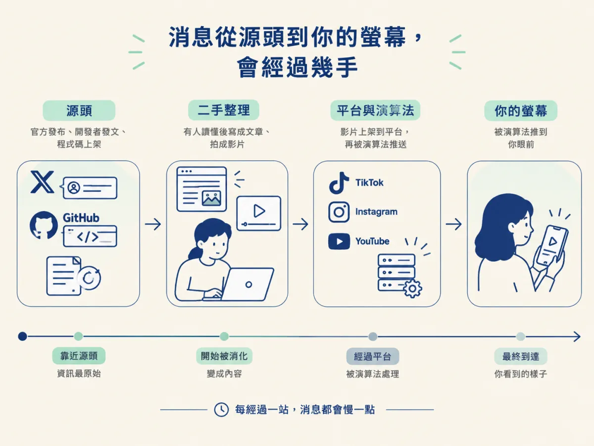
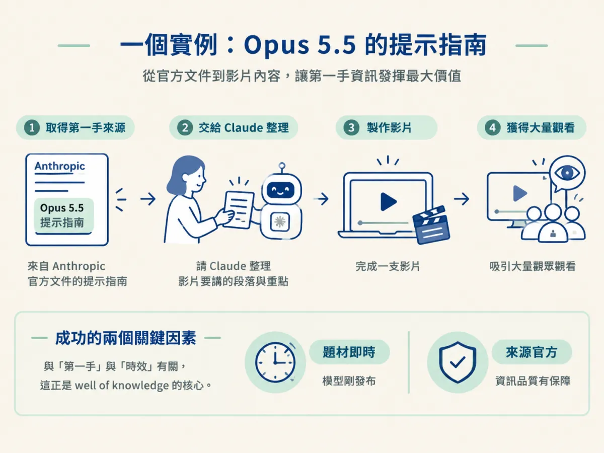
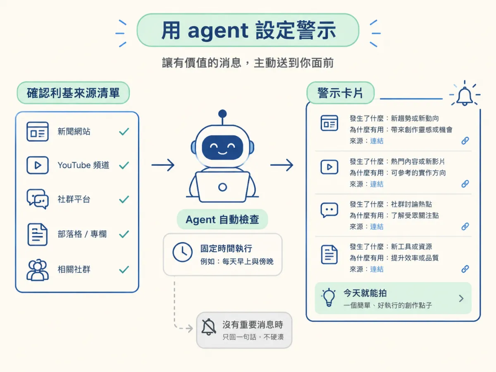

你每天花半小時滑短影音，看到一支講新工具的影片，內容很精彩。拍的人也很用心。但你仔細一想，影片裡講的事情，三天前就已經在 X 上被人討論過了。等你拍出自己的版本，你的內容又慢了一拍，觀眾在別的地方早就看過同樣的東西。
問題不是你不夠努力，而是消息在傳遞的路上轉了好幾手。這一課要教你分辨消息是來自源頭，還是已經被別人消化過的版本。知道這一點，你就能把注意力放在更早的地方；再搭配 agent 警示與收藏，把平常的瀏覽變成持續的研究流程。
分辨 X、GitHub、官方文件與 TikTok、Instagram、YouTube 之間的資訊延遲差，並用 agent 警示與收藏，把日常瀏覽變成持續的研究。
一則新消息通常會經過這樣的路徑：源頭先公布，例如官方發布、開發者發文、程式碼上架；接著有人讀懂它、拍成影片或寫成文章；影片上架到平台，最後被演算法推到你面前。每經過一站，消息都會慢一點。

課程的說法是，TikTok、Instagram 與 YouTube 上的內容，多半屬於「第二手」的知識來源。原因很實際：錄影要花時間，要對著鏡頭講、剪接、上架，知識在這段路上本來就有延遲。X、GitHub 與官方文件則比較接近源頭，所以課程把它們視為「第一手」。下面這張表整理了課程的分類：
| 來源 | 課程的分類 | 課程給的理由 |
|---|---|---|
| X（舊稱 Twitter） | 第一手，以 AI 來說 | 發文就是純文字，新東西一出來就能快速貼出 |
| GitHub | 第一手 | 很多開發者在這裡公開上傳程式、外掛與軟體 |
| 官方文件與更新日誌 | 第一手 | 直接來自發布的公司，例如 Claude 與 OpenAI 的文件 |
| TikTok、Instagram、YouTube | 第二手 | 拍片與上架需要時間，知識有一段延遲 |
GitHub 這一列也有一個實際的做法。課程示範者大約每兩週會去一次 Star History，那是一個整理 GitHub 熱門倉庫的榜單網站。榜上有興趣的項目，就點進去看它到底在做什麼。
來源早，不代表它適合你。課程舉過一個例子：示範者在 GitHub 上看到一個熱門的語音專案，那是一個開源、可以本地執行的 ElevenLabs 替代品。他承認這個專案有很多人背書，但他的內容並不是專門談開源與本地工具，所以對他來說用處不大。
這個例子說明了一件事：同一則消息，對不同的人價值不同。你的任務是先找到早的來源，然後再篩選。篩選的標準不是「它熱不熱」，而是「它跟我的觀眾與我的利基有沒有關係」。
課程舉了一個完整的例子，可以看到第一手來源怎麼變成內容。Claude 的新模型 Opus 5.5 剛發布時，Anthropic 的官方文件裡同時出現了一份提示寫法的指南。示範者知道官方文件在這種時候通常很有價值，於是把這份指南交給 Claude，請它一起整理影片要講的段落與重點。
這支影片據示範者說，大約有四十萬次觀看。他分析原因有兩點：題材很即時，因為模型才剛發布；來源是官方，資訊品質比較有保障。注意這兩點都跟「第一手」與「時效」有關，它們正是 well of knowledge 的核心。

有了第一手來源，下一個問題是怎麼持續追蹤，而不是偶爾想起來才看。課程示範的做法很樸素：刷 X 的時候，遇到有用的就收藏。收藏的東西不會消失，之後可以請 Claude 讀你的收藏，從裡面列出可能的點子。
這個做法把消費時間轉成發想時間。你還是在看東西，但每次看的目的變成了「這個之後可能用得到」。
如果你已經在用某種 agent，例如 Grok、Hermes、OpenClaw，或是有提醒功能的 ChatGPT，它們可以主動發通知。課程附了一段提示詞，讓 agent 替你做一個「新消息警示」。這段提示詞有幾個值得學的設計：
示範者的警示一天會送來兩到三次，因為他那個領域的變化非常快。課程特別說，你不必照他的頻率來；他的節奏是他的領域需要的。

警示和收藏做多了，最容易遇到的麻煩是資訊太多，每一則看起來都很重要。這時候需要一個簡單的判準：這則消息，能不能讓你的觀眾看了之後，更懂這個領域，或更會做某件事？如果只是跟你的受眾無關的新玩具，就跳過去。
這也是為什麼前一課的「井」很重要。井先告訴你消息從哪裡來，篩選則告訴你哪些消息值得你拍。兩者合起來，才是一個可以每天運作的研究流程。
第一手來源比短影音平台早，但早不代表適合。先找到早的來源，再用你的利基與觀眾做篩選。
消息從源頭到平台會經過好幾手，X、GitHub 與官方文件比短影音平台更接近源頭。收藏與 agent 警示能把日常瀏覽變成研究，但每一則消息都要先過你的篩選，確認它跟你的利基與觀眾有關，才值得放進你的創作流程。